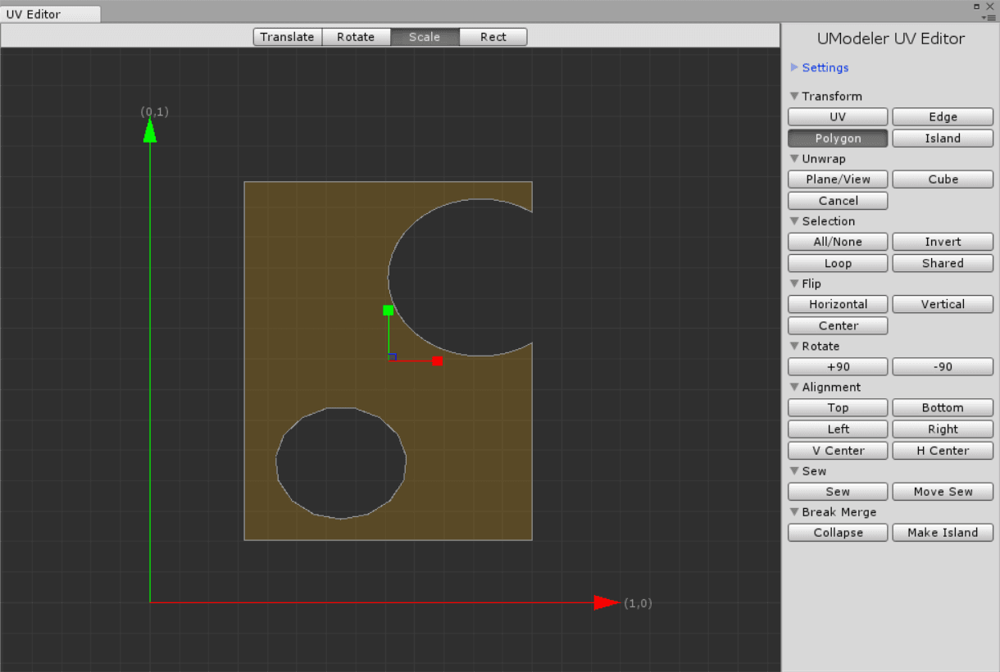
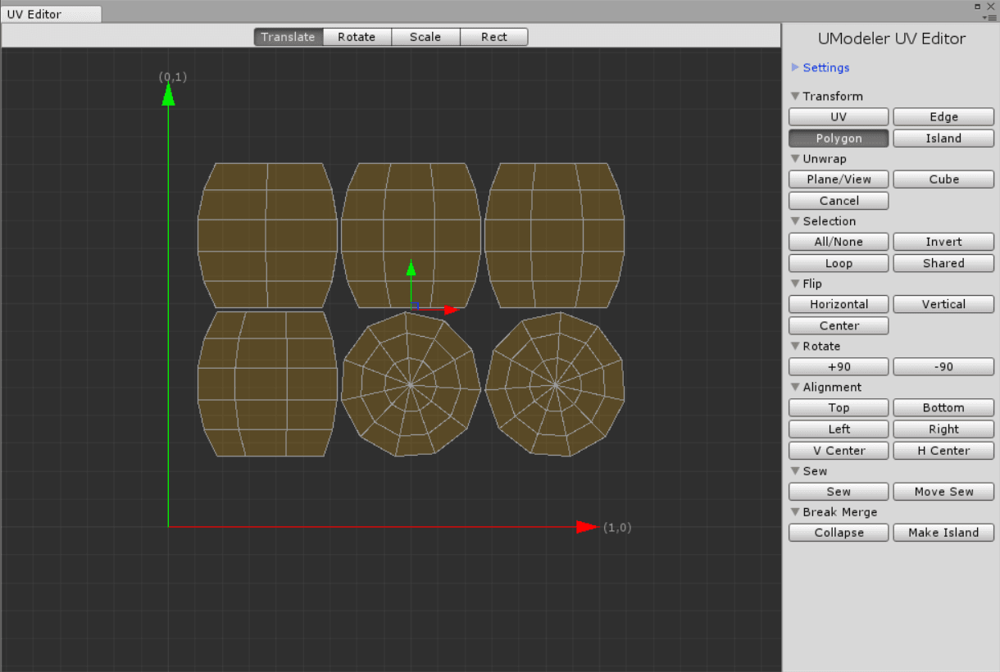
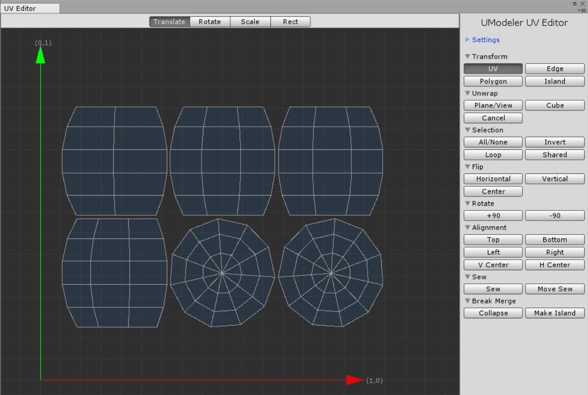

Flip/Rotate/Aligntment¶
Note
Holding SHIFT and selecting a tool of Flip/Rotate/Alignment groups will cause a separate transform.
And If Cross Cursor is on, the Flip and Rotate tools will be affected by Cross Cursor axis.
Flip¶
The Flip tools mirror the selected elements along its X-,Y or the origin arcoss the center of the seletions or Cross Cursor.
- Horizontal
- Mirrors elements along Y axis
- Vertical
- Mirrors elements along X axis
- Center
Mirrors elements along the center position.
Flip tools demo.
{kind=link}
Rotate¶
The Rotate tools rotate the selected elements by +90 degrees or -90 degrees around a center of the selected elements or Cross Cursor
- +90
- Rotates counterclockwise
- -90
Rotates clockwise
Rotate tools demo.
{kind=link}
Alignment¶
By selecting several elements you can align them within bounds, either vertically or horizontally.
- Top
- Aligns with a top line of the boundary.
- Bottom
- Aligns with a bottom line of the boundary.
- Left
- Aligns with a left line of the boundary.
- Right
- Aligns with a right line of the boundary.
- V(ertical) Center
- Aligns with a vertical center line of the boundary.
- H(oritontal) Center
Aligns with a horizontal center line of the boundary.
Alignment tools demo.
{kind=link}